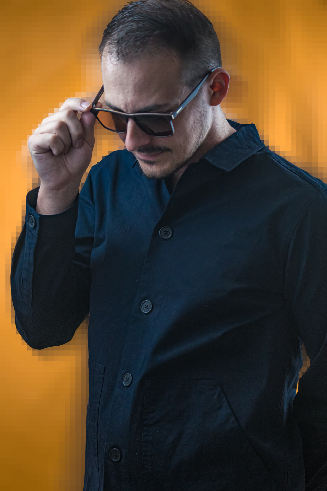

Pavel Konrad

Rooted in music.
Built in software.
Settled in
sound
.
▶ Sound reel
audio@pavelkonrad.cz
Adaptive audio
Music
Audio recording
Worked with
My audio work
▶
0:00
← All works
Pavel Konrad
Pavel Konrad —
audio@pavelkonrad.cz
·
Sound reel